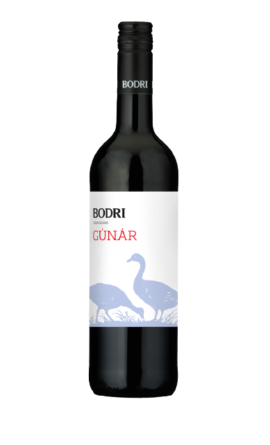

Szekszárdi „Rozi” Rozénk a virágmintás család legnépszerűbb tagja. Frissessége, üdesége, málna jegyekben gazdag zamata 6-8 °C fokon teljesedik ki. Fogyasztását friss gyümölcsök, saláták mellé télen-nyáron egyaránt ajánljuk.
750 ml
„BODRIKUTYA” (2019)
Szekszárdi Fehér Cuvée
Milyen is egy fehér puli? Határozott, de játékos és kecses. 10 -12 °C fokon ajánljuk, garantáltan nem harap.
750 ml

"GÚNÁR" (2020)
Portugieser
Márton napjára készített könnyed, elegáns savakkal, egyszerű tanninokkal és friss gyümölcsjegyekkel rendelkező borunk. Főként libaételek kísérőjeként ajánljuk. Márton nap után a nem túl fűszeres, hétköznapi ételek, friss sajtok kiváló kísérője lehet.
750 ml
„FALUHELY“ (2017)
Szekszárdi Kékfrankos Válogatás
Csodálatosan mély rubin szín, meggyes, szedres illat és krémes ízvilág jellemzi borunkat, illatban-ízben vaníliás-konyakos felhangokkal. 16-18 °C fokon juhtúrós ételekhez, egy jó kis brassóihoz, rántott májhoz vagy rakott krumplihoz eszményi társnak ígérkezik.
750 ml
„FUXLI” (2019)
Szekszárdi Siller
Sillerünk Kékfrankos és Kadarka házasítása. Illatában édes málna és érett meggy jelentkezik, melyet zöldfűszeres jegyek lengnek körül, míg a korty rózsaburokba zárt friss szeder emlékét idézi. Élénk savai telt ízérzettel párosulnak. Fogyasztását 10-12 °C fokon a gasztronómia széles skáláján ajánljuk.